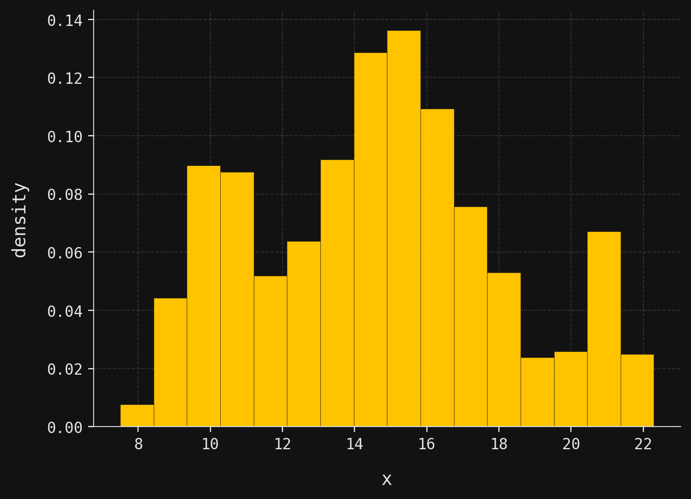

Introduction
A mixture of gaussians represents one of the most elegant and practically useful concepts in probability theory and machine learning. At its core, this is a probabilistic model that assumes observed data arises from a combination of several underlying normal distributions, each contributing to the overall distribution with different weights and parameters. Rather than forcing all data points to conform to a single bell curve, a gaussian mixture allows for multiple clusters, each governed by its own mean, variance, and relative importance in the mixture. This creates a framework for modeling complex, multi-modal distributions that frequently appear in real-world scenarios. Consider, for example, the heights of adults in a population that includes both men and women, or the distribution of pixel intensities in an image containing multiple distinct objects. A single gaussian would poorly capture the true underlying structure, while a mixture model can naturally accommodate the multiple peaks and varying spreads that characterize such data. The beauty of this approach lies not only in its flexibility but also in its mathematical tractability, making it both theoretically sound and computationally feasible for a wide range of applications.
For example, suppose we were presented with the following data distribution, displayed here as a histogram:
Three clusters are immediately evident: the first with a peak around \(x=10\), the second around \(x=15\), and the third near \(x=21\). The presence of three clusters with well-defined peaks suggests that the data might be modeled well by a mixture of three gaussians.
Indeed, this synthetic dataset contains 1,000 observations sampled from a three-component mixture of gaussians, also called a gaussian mixture model or GMM. In this introductory post, I’ll explain the mathematical and graphical structure of the GMM that generated this data. Since I fixed the GMM parameters before sampling, we know the true underlying model. In a follow-up post, I’ll tackle the inverse problem: given only the dataset, how can we estimate the parameters and recover the original GMM?
Conditional PDFs and graphical structures
As mentioned above, a GMM combines several individual gaussians, each called a component of the mixture. Generating a sample \(x\) from a GMM involves two steps:
- Select a component from which to generate \(x\).
- Sample \(x\) from the chosen component gaussian.
The key insight is that components need not be selected with equal probability. Each component has an associated weight that determines its selection probability in step 1.
To formalize the selection process, we introduce the categorical distribution. Suppose given non-negative real numbers \(\phi_1,\phi_2,\ldots,\phi_m\) that sum to \(1\):
\[ \phi_1 + \phi_2 + \cdots + \phi_m =1. \]
We say that a discrete random variable \(Y\) has a categorical distribution, written
\[ Y \sim \mathcal{C}at(\phi_1,\phi_2,\ldots,\phi_m), \tag{1}\]
if its probability mass function has the form
\[ p(y) = \begin{cases} \phi_y & : y=1,2,\ldots,m, \\ 0 & : \text{otherwise}. \end{cases} \]
We can now describe GMM sampling more precisely. For a GMM with \(m\) components where the \(i\)-th component has weight \(\phi_i\), and \(Y\) a categorical random variable as in Equation 1, the sampling scheme above becomes:
- Sample \(y\) from the categorical distribution \(Y\).
- Given \(y\), sample \(x\) from the \(y\)-th component gaussian.
This natural progression from component selection to data generation is often called forward sampling, for obvious reasons.
We can visualize this sampling process with a simple graphical representation:
Here, \(Y\) represents the categorical random variable that encodes component weights, while \(X\) represents the random variable from which we sample our observation \(x\). The arrow captures the “forward” direction of the sampling process: first select a component, then generate data from it. This diagram illustrates the GMM as a simple example of a probabilistic graphical model (or PGM)—a topic I’ll explore in depth in future posts.
The mathematical relationship between these variables is straightforward. Given that component \(y\) has been selected, the conditional distribution of \(X\) is gaussian:
\[ (X \mid Y=y) \sim \mathcal{N}(\mu_y,\sigma_y^2). \]
This conditional distribution corresponds exactly to the \(y\)-th component of our GMM. Notice that both the mean \(\mu_y\) and standard deviation \(\sigma_y\) are component-specific, allowing each gaussian in the mixture to have its own location and spread.
A GMM thus has two different types of parameters:
- The component weights \(\phi_1,\phi_2,\ldots,\phi_m\).
- For each \(y=1,2,\ldots,m\), the guassian parameters \(\mu_y\) and \(\sigma_y\).
As I mentioned in the introduction, in this post we assume that these parameters are fixed and known. Later, we will learn how to estimate them from data.
Marginal PDFs
The marginal distribution of \(X\) follows directly from the law of total probability: \[ f(x) = \sum_{k=1}^m p(y)f(x|y) = \sum_{k=1}^m \phi_k f(x|k), \tag{2}\]
where the conditional densities are normal:
\[ f(x|k) = \frac{1}{\sigma_k\sqrt{2\pi}} \exp \left[ - \frac{1}{2} \left( \frac{x-\mu_k}{\sigma_k}\right)^2\right]. \]
Thus, the marginal density \(f(x)\) is a convex linear combination of normal densities.
Now let’s examine the specific \(3\)-component GMM that generated our dataset. The component parameters are:
\[ (\mu_1,\sigma_1) = (10, 1), \quad (\mu_2,\sigma_2) = (15, 2), \quad (\mu_3,\sigma_3) = (21, 0.5), \]
with weights:
\[ (\phi_1,\phi_2,\phi_3) = (0.2, 0.7, 0.1). \]
Notice that the middle component (centered at 15) dominates with 70% weight, while the outer components contribute 20% and 10% respectively.
Let’s implement and visualize the component gaussians and the marginal PDF in Python. First, let’s load the parameters:
norm_params = [
{"loc": 10, "scale": 1},
{"loc": 15, "scale": 2},
{"loc": 21, "scale": 0.5}
]
weights = [0.2, 0.7, 0.1]Now, we plot the individual components, each scaled by its weight:
import numpy as np
import matplotlib.pyplot as plt
from scipy.stats import norm
mesh = np.linspace(7, 23, num=200)
for k, (param, weight) in enumerate(zip(norm_params, weights)):
X = norm(**param)
plt.plot(mesh, weight * X.pdf(mesh), color=colors[k], label=f"component {k+1}")
plt.xlabel("x")
plt.ylabel("density")
plt.title("gaussian components")
plt.legend()
plt.tight_layout()
plt.show()
plt.close()
The marginal PDF implementation follows Equation 2 directly:
def marginal_pdf(x):
return sum([weight * norm(**param).pdf(x) for weight, param in zip(weights, norm_params)])Finally, we plot the theoretical marginal PDF against the empirical histogram:
import seaborn as sns
data = np.load("../../data/gmm-data.npy")
sns.histplot(data=data, color=yellow, alpha=0.25, ec=grey, zorder=2, stat="density", label="data")
plt.plot(mesh, marginal_pdf(mesh), color=blue, label="marginal PDF")
plt.xlabel("x")
plt.ylabel("density")
plt.legend()
plt.tight_layout()
plt.show()
plt.close()
The close agreement between our theoretical marginal PDF and the empirical histogram confirms that our synthetic dataset faithfully represents the underlying GMM. Notice how the theoretical curve captures all three modes: the subtle left peak around \(x=10\), the dominant central peak near \(x=15\), and the sharp right peak at \(x=21\). The varying heights and widths of these peaks directly reflect the component weights and standard deviations we specified.
Sampling
Having established the theoretical foundation and visualized the marginal PDF, let’s now examine the process behind generating our synthetic dataset.
But this is easy. We first sample 1,000 values of \(y\) from the categorical random variable
\[ Y \sim \mathcal{C}at(0.2, 0.7, 0.1), \]
and then for each \(y\) we sample from the gaussian \(X|Y=y\). We check that our new generated sample coincides with the original dataset:
np.random.seed(42) # Needed to replicate the original dataset
n_samples = 1000
y_samples = np.random.choice([0, 1, 2], size=n_samples, p=weights)
x_samples = np.array([norm(**norm_params[y]).rvs() for y in y_samples])
print("Are the datasets equal? " + ("Yes." if np.array_equal(data, x_samples) else "No."))Are the datasets equal? Yes.Conclusion
In this post we’ve built the GMM from the ground up, starting with its definition, exploring its conditional and marginal structure, and even sampling from it directly. But in practice, the real challenge is the inverse problem we mentioned earlier: we are usually given a dataset and want to fit a GMM by estimating its parameters. How do we tease apart the hidden components, estimate their weights, and recover the underlying mixture? That puzzle leads directly to one of the most beautiful iterative methods in statistics and machine learning: the expectation–maximization algorithm, which will be the focus of the next post in this series.